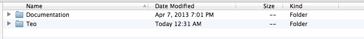
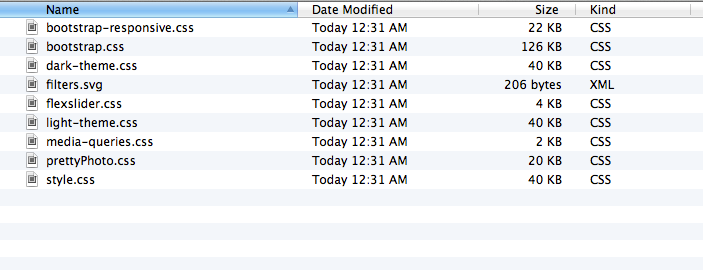
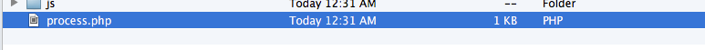

Teo is your choice if you wish to grow up showing yourself to the world with just one face.
Fully responsive, it promises to be bullet-proof on both desktop and mobiles. It comes with a blog page and a blog post page for your personal use. Teo is a creative single page template, thought to be outside the box, using great colors to emphasize what matters most.
Features:Download Contents:
This theme was built with the help of the BootStrap framework.
Open the HTML & CSS folder and your will find all HTML, CSS, JS and PHP files that you'll need to customize and add your content.
This template uses 5 CSS files.
bootstrap-responsive.css - the responsive css code for the boostrap framework.
bootstrap.css - the bootstrap framework with all the options and the grid system.
flexslider.css - used on the homepage sliders.
prettyPhoto.css - used for lightbox.
dark-theme.css - used for the dark color scheme.
light-theme.css - used for light color scheme.
media-queries.css - used for responsiveness.
style.css - this is the main file with most of the custom code, this is where you should add your custom code and edit the existing one.
If you would like to edit a specific section of the site, simply find the appropriate label in the CSS file, and then scroll down until you find the appropriate style that needs to be edited. If you're using firefox I'd suggest using Firebug, it's really awesome. Get firebug
These template uses one PHP file for the contact form
process.php - file used by the contact form that you need to edit, on line 11, to change the e-mail address.
This template imports the following javascript files:
js/bootstrap.min.js - the bootstrap framework.
js/main.js - this is the custom code used in the template. This is the place you need to edit in case you want to add anything new to the template or edit the current effects.
js/jquery.flexslider.js - Used on the homepage sliders.
js/jquery.placeholder.min.js - used on the forms.
js/jquery.prettyPhoto.js - used for lightBox images.
js/jquery.js - the jQuery library.
js/parallax.js - the parallax effect is used on the separator images.
js/jquery.isotope.min.js - Used for the portfolio section.
js/tinynav.min.js - transforms the default navigation into a select html tag, for mobile devices.
To edit the logo you'll need a software to edit images like PhotoShop or GIMP. There is a .psd file of the template included, you can use that one to alter the logo or you can create a completely new one.
For the contact form to work you'll need to open the file process.php, go to line 11 and add your email address.
The fonts used in this template are Open sans, Droid Serif, Georgia, Oswald and Times New Roman(from google web fonts)
You can contact me here:
support@teothemes.com
Themeforest profile